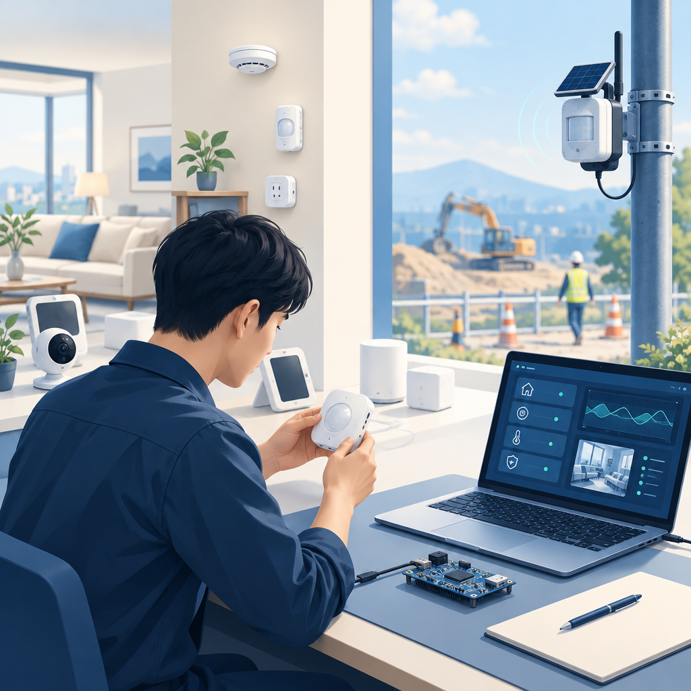

Nov 2025 – Present

BK Networks Co., Ltd.
Executive Director, R&D Lab · Systems Analysis, Validation & Firmware
- Review home automation features and product direction.
- Configure work-site blind-spot detection (BSD) systems, upgrade firmware and validate hardware.
- Develop CMS and client solutions for digital signage.